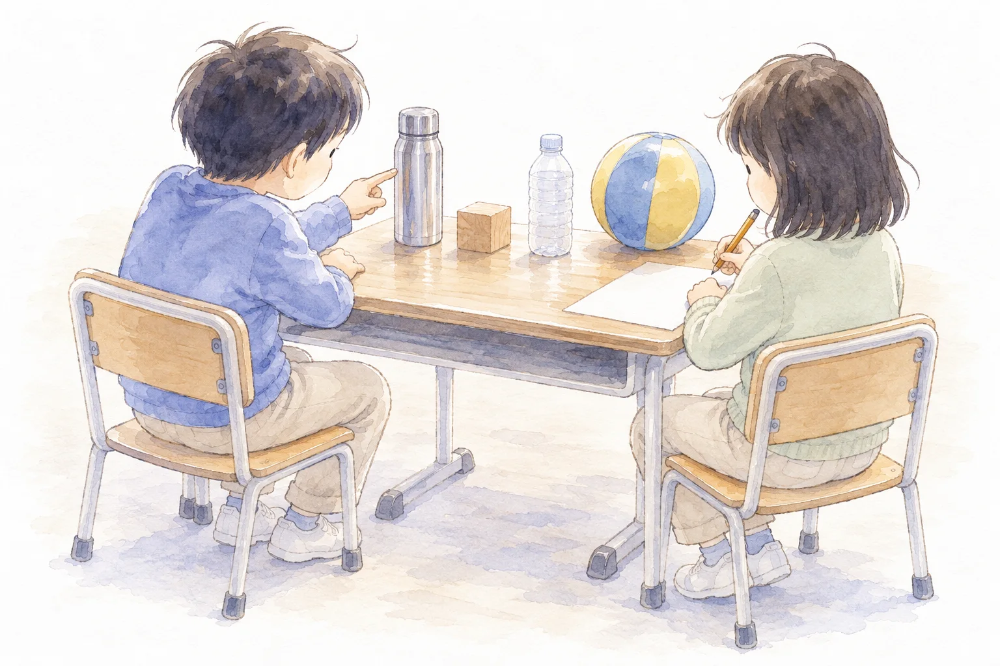
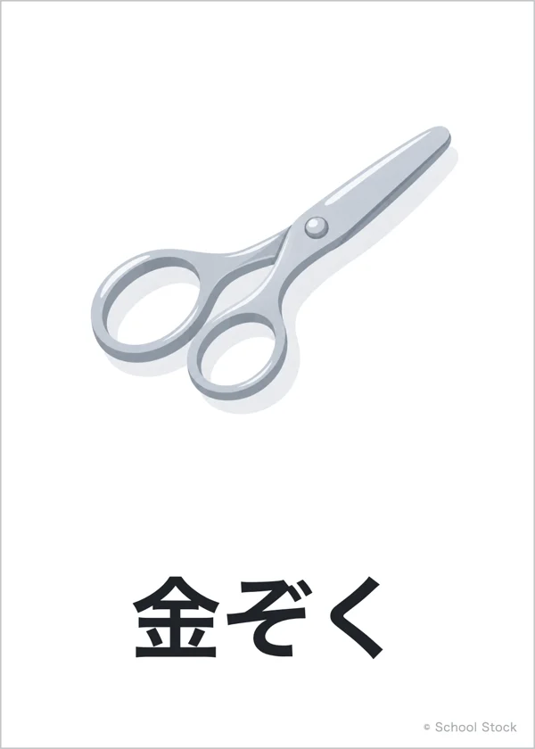
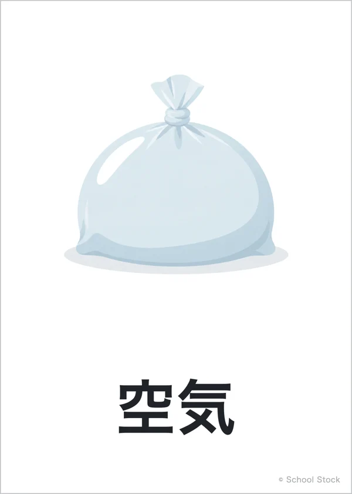
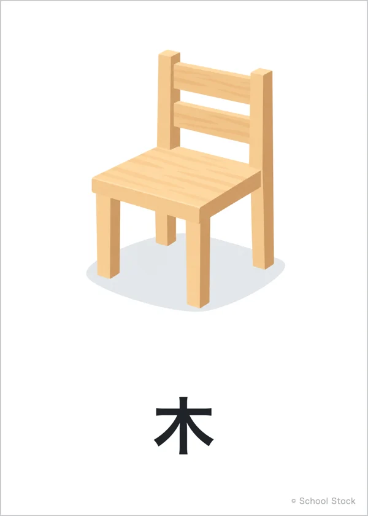
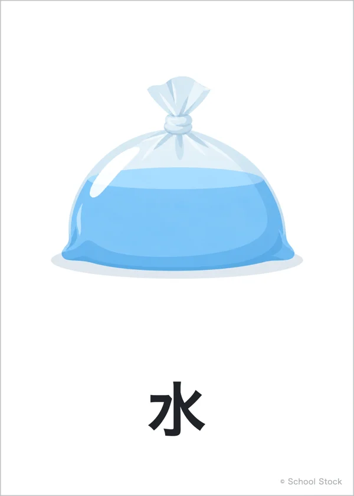
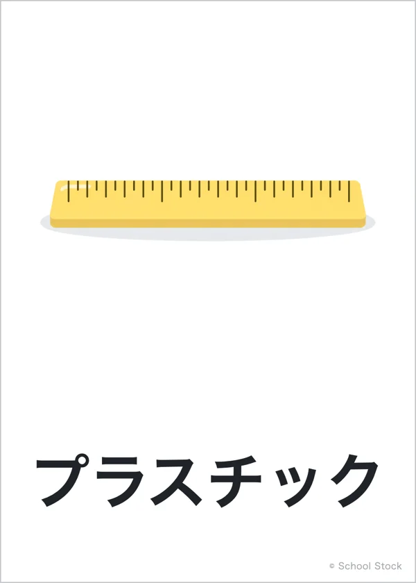
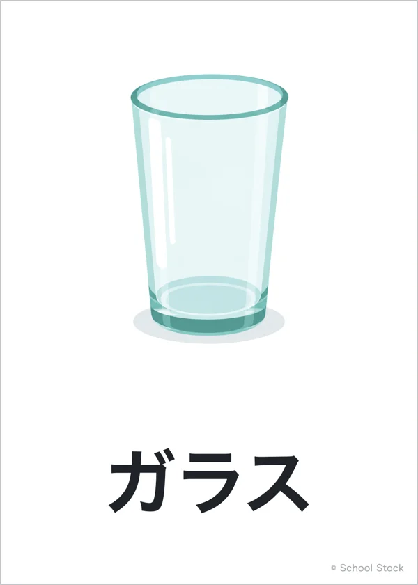

Board
板書計画
マス目プリントメーカーの板書計画で作りました。黒板の下の3つの欄は「発問と、予想される反応」です。編集用ファイルは、マス目プリントメーカーの「ひらく」で読みこむと、そのまま直せます。

第4時 第１次 空気から、身の回りの物へ
Lesson 04
ほかに あたためると体積が変わる物は？

Lesson 4 / Will it change?
Aim
学習活動・身の回りの物を、体積が変わりそうな物と変わらなそうな物に分け、調べる順番を決める。
目指す児童の姿空気の結論を基に身の回りの物を分類し、空気や水のような形のない物と、金属や木のような形のある物とを比べて、次に調べる物を決めている。
指導案の着眼１の表（第１次）より。第◯次の中での時間の割りふりは案です。
On screen
この時間の問い
ほかに あたためると体積が変わる物は？






問題は、子どもとつくってから映します。ふりがなは、この欄だけに付けています。
Flow
Experiment
Board
マス目プリントメーカーの板書計画で作りました。黒板の下の3つの欄は「発問と、予想される反応」です。編集用ファイルは、マス目プリントメーカーの「ひらく」で読みこむと、そのまま直せます。
Wrap up
カードを電子黒板の上で列へ動かせる。書体はBIZ UDゴシック。
拡大印刷して黒板に貼る。第5時・第7時にも見返す。
黒板用。1まい100×140mm。